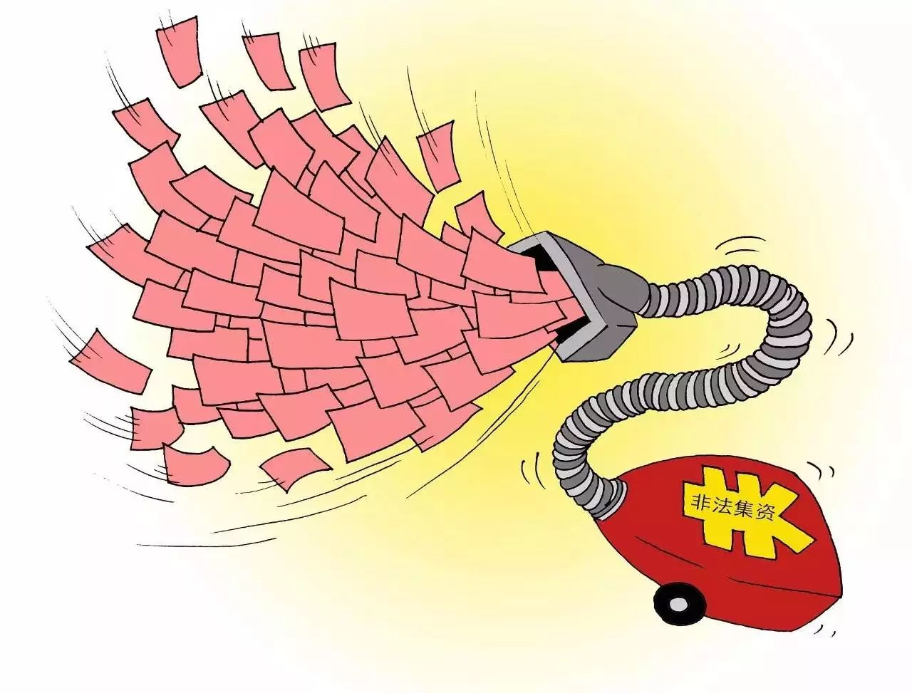

收录于合集
丨来源：央视新闻微信
非法集资不是一个新词，然而披上“经济新业态”、“金融创新”的外衣后，非法集资的迷惑性大大增强。25日，公安部和民政部提醒广大民众务必注意警惕。公安部还重点提醒，防范非法集资要注意九种现象。
非法集资案件数及涉案金额“双降” 但形势依然严峻
处置非法集资部际联席会议成员中的十三个部门25日在北京召开座谈会，根据座谈会上透露的消息，2016年全国新发非法集资案件5197起、涉案金额2511亿元，同比分别下降14.48%、0.11%。非法集资案件数和涉案金额近年来首次出现“双降”，前两年案件集中爆发、急剧攀升的势头已经有所遏制。但非法集资形势依然复杂严峻，案件总量仍处于历史高位，大案要案频发，化解处置压力依然较大。
非法集资“穿新衣” 呈现“下乡进村”趋势
据处置非法集资部际联席会议办公室分析，当前非法集资组织化、网络化趋势日益明显，非法集资犯罪手法也是不断翻新，犯罪分子假借迎合国家政策，打着“经济新业态”“金融创新”等幌子，从商品营销、资源开发、种植养殖等“实体经济”向理财、众筹、期货、虚拟货币等纯粹“资本运作”转变，噱头更新颖，迷惑性更强，投资者辨别难度加大，消费返利、养老投资等新型犯罪层出不穷，互联网+传销+非法集资模式案件多发，层级扩张快，传染性很强，防范打击难度进一步加大。
此外，近年来，非法集资活动呈现“下乡进村”趋势，一些地方的农民合作社打着合作金融旗号，突破“社员制”“封闭性”原则，超范围对外吸收资金；有的合作社公开设立银行式的营业网点、大厅或营业柜台，欺骗误导农村群众；有的投资理财公司、非融资性担保公司改头换面，在农村广布“熟人业务员”，虚构高额回报理财产品吸收资金。
公安部提醒：防范非法集资 重点警惕九种现象
公安部经济犯罪侦查局根据打击非法集资的实践，总结出九种现象，特别提醒公众理性投资、防范非法集资。这些现象包括：
1、所许诺的投资收益率畸高，尤其是许诺“静态”、“动态”收益等回报方式；
2、电话推介、设立大量分支机构推介“投资项目”；在街头、超市、商场等人群密集、流动场所及金融机构办公场所附近发放“理财产品”广告；频繁招揽老年人投资，尤其以公开讲座、聚会、馈赠礼品等方式吸引老年人加入；
3、以“虚拟货币”、“资金互助”及境外股权、期权、期货、能源、矿产、外汇、贵金属等投资、交易为噱头吸引投资，投资金额不限且许诺固定回报；声称成立私募股权投资合伙企业，但并不办理合伙企业的工商注册登记手续；
4、公司法定代表人、股东、高管人员使用虚假身份注册、经营或有不良信用记录、网上负面信息；
5、公司注册地、网站注册地、服务器所在地在境外或高管系外籍人员的公司，以公开讲座、演讲等方式吸引投资；
6、以各种“山寨”荣誉称号和所谓的名人、专家做广告宣传，以及以大型集会、庆典等方式宣传、推介“投资项目”；
7、要求向个人账户交付投资款、以现金、POS刷卡等方式交付投资款或者让投资人在境外开立银行账户划转投资款。
8、收取投资款的账户系以外籍人员尤其是东南亚籍人员身份在境内开立；
9、声称与银行“战略合作”或者声称群众的资金由银行托管、监管，但实际上仅仅是在银行开立有账户。
民政部提醒：警惕养老服务领域非法集资
老年人大多数金融知识欠缺，特别容易被引诱受骗，是非法集资受害的重灾区。民政部将对民政业务领域涉嫌非法集资活动的各类信息进行监测预警，及时识别监测并通报以发行养老理财计划等方式向不特定的老年群体筹集资金，或者以高利回报为诱惑发行养老服务会员卡等涉嫌非法集资犯罪行为，帮助老年人等群体维护自身财产安全。

民政府相关负责人还特别提示要警惕三种养老服务领域的非法集资：
1、以提供“养老服务”等名义吸收资金。这类非法集资行为不具有提供养老服务的真实内容或者不以提供养老服务为主要目的，以养老服务为名收取会员费、“保证金”，并承诺还本付息或者给付回报等方式非法吸收公众资金。
2、以相关“销售产品”等名义吸收资金。这类非法集资行为是指养老服务机构不具有销售商品的真实内容或者不以销售商品为主要目的，以商品回购、寄存代售、消费返利等方式吸收公众资金。
3、以投资“养老公寓”、“养老院”等名义吸收资金。这类非法集资行为是指不具有房地产销售的真实内容或者不以房地产销售为主要目的，打着投资养老公寓、养老地产等幌子，以返本销售、售后包租、约定回购等方式非法吸收公众资金。还有部分以投资养老基地、养老建设项目等名义，承诺给付高额回报，非法吸收公众资金。
近期将开展涉嫌非法集资风险专项排查活动
根据安排，处置非法集资部际联席会议办公室将在今年5月至7月组织各省（区、市）政府开展涉嫌非法集资风险专项排查活动，对投资咨询、财富管理、第三方理财、担保等投融资中介机构，网络借贷平台、第三方支付、众筹平台等互联网金融行业企业，私募股权投资、电子商务、租赁、房地产、地方交易场所等行业企业及关联企业，各类涉农互助合作组织、养老机构、民办院校等重点领域、主体，开展全面风险排查。
7月至9月组织开展涉嫌非法集资广告资讯信息排查清理活动，对各类载体发布传播的涉嫌非法集资广告资讯信息进行全面排查，及时查处违法犯罪线索，净化市场环境。

另据了解，为了加大打击非法集资力度，《处置非法集资条例》正在酝酿出台。《条例》将赋予地方人民政府对非法集资活动的行政查处权力，解决地方人民政府有责无权、依据不足、手段缺乏等突出问题。目前《条例》送审稿已征求地方和部门意见，国务院法制办会同银监会正在根据反馈意见进行修改完善，将尽快出台，为防范和处置非法集资提供法律制度保障。
此外，监管部门还在研究将涉及非法集资人员纳入金融失信人黑名单，对非法集资犯罪分子实行联合信用惩戒。
声 明
国政学人微信公众平台系非盈利学术平台。文章出自最新的南大CSSCI和北大中文核心来源期刊为。目的是方便广大学人进行学术研究，促进学术的传播和交流，不做任何商业用途。如有任何权利问题，请直接与我们联系。